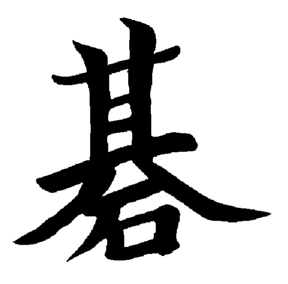

Úvod
Go je japonská dosková hra, ktorá sa hrá na doske s mriežkou. Je to najstaršia dochovaná dosková hra. Má jednoduché pravidlá, ale hra sama o sebe je veľmi komplexná.

Herná doska a kamene
Najčastejšie sa hrá na doske s rozmermi 19x19, ale existujú aj menšie dosky 9x9 alebo 13x13. Hráči používajú čierne a biele kamene.
Základné pravidlá
- Hra začína prázdnou doskou a začína čierny. Hráči sa striedajú v ťahoch, kde jeden ťah pozostáva z položenia jedného kameňa svojej farby na voľný priesečník na doske.
- Cieľom hry je ohraničiť viac územia než súper. Pod územím rozumieme prázdne priesečníky obklopené kameňmi jednej farby.
- Kameň alebo skupina kameňov je zajatá a odstránená z dosky, ak sú zo všetkých strán obklopené kameňmi súpera.
- Ak už si hráč myslí, že žiaden jeho ťah by mu nepriniesol úžitok, môže povedať pas.
- Hra končí, keď obaja hráči povedia pas bezprostredne po sebe. V tom momente sa spočítajú body.
Počítanie bodov
- Hráč získa jeden bod za každý priesečník, ktorý je súčasťou jeho územia.
- Každý zajatý kameň súpera sa počíta ako jeden bod.
- Hráč s bielymi kameňmi dostane tzv. komi - niekoľko bodov, väčšinou je to 6 alebo 6,5 - ako kompenzáciu za to, že nezačínal.
- Víťazom je hráč s najväčším počtom bodov.
Pravidlo Ko
Pravidlo Ko zakazuje hráčom opakovať tú istú hernú pozíciu viac krát po sebe.